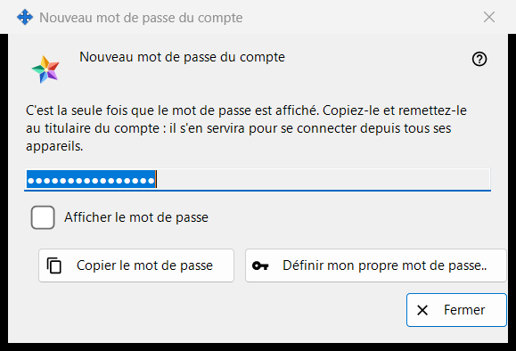
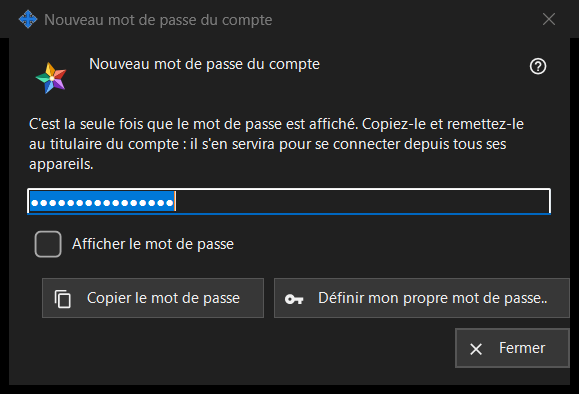

Nouveau mot de passe du compte
Objectif
Affiche ou demande le mot de passe d'un compte du serveur d'échange, selon trois modes : Généré affiche une seule fois un mot de passe que le programme vient de créer (l'image) ; Saisi demande un mot de passe de votre choix ; Conservé affiche un mot de passe enregistré sur ce PC. La fenêtre s'ouvre dans les paramètres du serveur d'échange local du Share Manager après « Ajouter un compte.. », « Réinitialiser le mot de passe.. » ou « Définir le mot de passe partagé.. », ainsi qu'à partir des questions sur le mot de passe de l'administrateur.


Dans cet ordre
- Généré : cliquez sur « Copier le mot de passe » (cochez « Afficher le mot de passe » pour le lire), remettez le mot de passe au titulaire du compte et cliquez sur « Fermer ».
- Mot de passe personnel : cliquez sur « Définir mon propre mot de passe.. » ou choisissez « Saisir moi-même un mot de passe », saisissez un mot de passe conforme à la règle et cliquez sur « Enregistrer le mot de passe ».
- Conservé : sélectionnez le compte et cliquez sur « Afficher le mot de passe.. ».
Les éléments
Mot de passe généré (sur l'image)
Titre de la fenêtre « Nouveau mot de passe du compte ». Le texte d'introduction dit : « C'est la seule fois que le mot de passe est affiché. Copiez-le et remettez-le au titulaire du compte : il s'en servira pour se connecter depuis tous ses appareils. » Le champ est masqué et en lecture seule ; « Afficher le mot de passe » ne le révèle que dans cette fenêtre. « Copier le mot de passe » le place dans le presse-papiers par une voie protégée qui le tient à l'écart de l'historique du presse-papiers Windows et du presse-papiers cloud, et répond « Le mot de passe a été copié. ». Le champ est vidé à la fermeture de la fenêtre.
Fermer sans copier
Si vous fermez un mot de passe généré que vous n'avez ni copié ni affiché, le programme demande « Fermer sans avoir copié le mot de passe ? » et ajoute qu'il ne peut plus être affiché - ensuite, il ne pourra être que réinitialisé. La réponse par défaut est « Non ». Quand le mot de passe est conservé sur ce PC, aucune question n'est posée.
Définir mon propre mot de passe..
S'utilise depuis la fenêtre du compte : ferme cette fenêtre sans utiliser le mot de passe généré et rouvre la réinitialisation, cette fois avec un mot de passe que vous saisissez vous-même.
Mot de passe saisi
Titre « Mot de passe du compte », libellé « Mot de passe : », un champ masqué et « Afficher le mot de passe ». Indication : « Au moins 10 caractères, avec une lettre latine majuscule, une minuscule et un chiffre. » Pendant que vous saisissez, une ligne d'avertissement indique ce qui manque, par exemple « Il faut au moins un chiffre. ». « Enregistrer le mot de passe » refuse un mot de passe qui ne respecte pas la règle ; un mot de passe conforme retourne à la fenêtre qui l'avait demandé, et le serveur garde le dernier mot.
Mot de passe conservé
Le titre ajoute l'identifiant à « Mot de passe du compte ». La fenêtre affiche le mot de passe enregistré sur ce PC, en lecture seule, avec « Afficher le mot de passe » et « Copier le mot de passe » ; rien n'est demandé à la fermeture. Elle s'ouvre avec « Afficher le mot de passe.. » dans la liste des comptes, qui n'apparaît que lorsque l'interrupteur « Conserver les mots de passe des comptes sur ce PC » est activé. L'interrupteur est désactivé par défaut ; l'activer déclenche d'abord une question, puis le mot de passe est conservé chiffré pour votre compte Windows, lisible par tout programme exécuté sous ce compte. Un mot de passe défini avant l'activation de l'interrupteur n'est pas conservé.
Paramètres du gestionnaire · Paramètres de partage SFTP · Paramètres du serveur d’échange